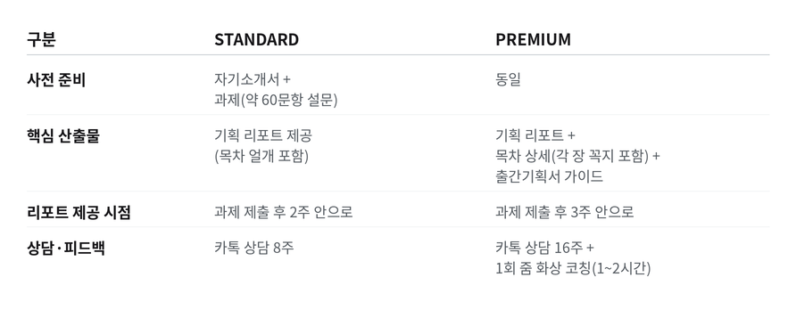
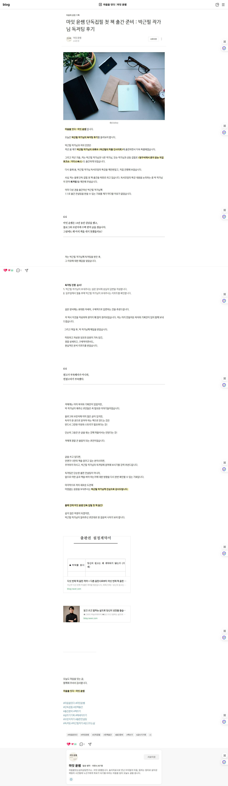
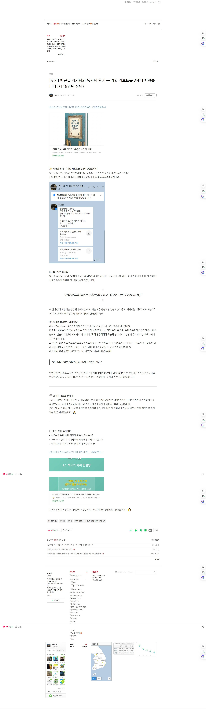
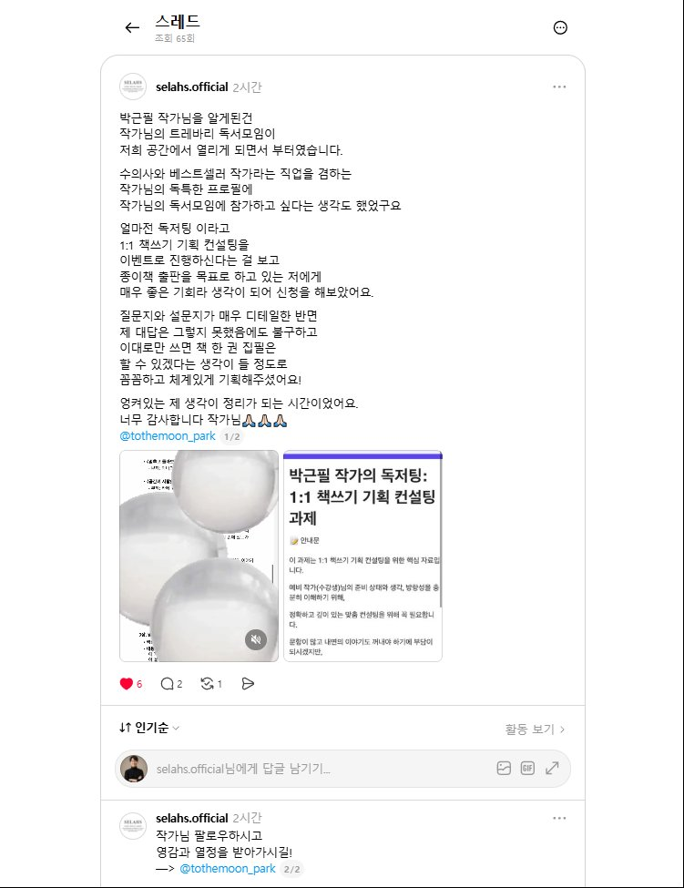
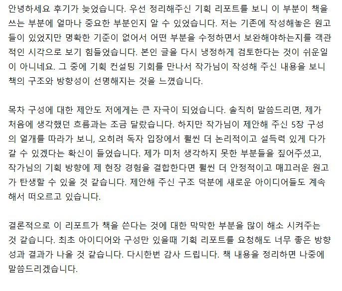
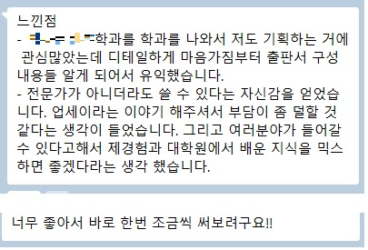

독자에서 저자로, 당신의 첫 책을 현실로
책을 쓰고 싶은데 어디서부터 시작해야 할지 막막하신가요?
저는 책 5권을 출간했고, 그중 한 권은 베스트셀러가 되었으며, 원고 없이 출간 계약을 성사시킨 경험이 있습니다. 그 노하우를 담아 '기획'에 집중한 1:1 책쓰기 기획 컨설팅, 독저팅을 정식 오픈합니다.
5줄 요약
- 책 5권 출간 / 베스트셀러 작가
- 원고 없이 출간 계약 성사 (매우 이례적 사례)
- 출판 계약의 80%를 차지하는 '기획' 집중 컨설팅
- 8~16주 밀착 피드백 + 실전 자료 제공
- 출판사 러브콜을 받는 책 기획 완성
이런 고민, 해결해드립니다
- 책을 쓰고 싶지만 감이 안 잡혀요
- 글은 써봤지만, '책' 형태로 완성할 자신이 없어요
- 출간을 꿈꾸지만 어디서부터 어떻게 시작해야 할지 막막해요
- 책 분야, 콘텐츠(주제, 소재, 콘셉트), 제목/부제, 목차, 출간기획서… 모두 너무 어려워요
- 출판사의 러브콜을 받는 투고를 하고 싶어요
- 책쓰기에 "기획"이 중요하다는데, 기획을 어떻게 해야 하는지 모르겠어요
책쓰기는 글쓰기와 다릅니다
출판 계약에서 가장 중요한 건 원고가 아니라 '기획'입니다. 저는 책쓰기에서 기획 80% / 원고 20% 비중을 둡니다.
콘텐츠(주제·소재·콘셉트), 제목과 부제, 목차, 출간기획서, 저자 브랜딩(포트폴리오·전문성·인지도 등)
내용·문장력 (편집자와 개선 가능)
기획이 탄탄하면 원고는 결국 따라오게 되어 있습니다. 시간이 얼마냐 걸리냐의 문제일 뿐, 이에 맞춰 쓰기만 하면 되니까요. 수강생은 기획에 맞춰 열심히 쓰면 됩니다.
내용이 빈약하거나 문장력이 부족해도 괜찮습니다. 출판사는 필력보다 기획력을 우선 평가합니다. 원고(초고)는 편집자와 함께 얼마든지 개선할 수 있으니까요. 이는 단순히 제 개인의 의견이 아니며 실제 현직 출판사 대표와 편집자의 말이기도 합니다.
본 컨설팅은 출판 계약 핵심인 "기획" 부분을 1:1 맞춤으로 가이드해드립니다. 즉, 기획에 초점을 둔 〈책쓰기 기획 컨설팅〉입니다.
왜 독저팅을 받아야 하나요?
- 컨설턴트의 검증된 기획력
- 일반 컨설팅과 차별화된 코칭형 컨설팅
- 합리적 수강료
- 전폭적인 혜택(지원)
- 확실한 성과 기대
독저팅의 특징은 다음과 같습니다
- 맞춤형 : 수강생이 제출한 자료를 바탕으로 퍼스널 브랜딩을 고려해 컨설팅합니다.
- 밀착형 : 1:1 카톡 상담을 운영합니다.
- 실속형(실전형) : 수강생은 컨설팅을 통해 얻은 것을 바로 책쓰기에 적용할 수 있습니다.
- 단기형 : 군더더기를 없애 불필요한 시간 낭비를 줄입니다.
실전 경험이 증명하는 코칭의 신뢰
두 번째 책(2024) : 원고 없이 "출간기획서" 하나로 계약 (매우 이례적인 사례)
→ 저의 기획력이 얼마나 뛰어난지를 잘 입증하는 사례이며, 출판 계약은 원고보다 '기획'이 훨씬 중요하다는 걸 잘 보여주는 사례입니다.
세 번째 책(2025) : 선인세 조건 계약 (요즘 시장에선 흔치 않은 사례)
→ 〈마흔 더 늦기 전에 생각의 틀을 리셋하라〉는 출간 후 베스트셀러가 되었습니다.
여섯 번째 책(2026년 하반기 출간 예정) : 원고도 출간기획서도 없이, 출판사의 제안으로 계약
→ 두 번째 책은 원고 없이 출간기획서 한 편으로 계약했습니다. 이 책은 그 기획서도 없었습니다. 쓴 것이 아무것도 없는 상태에서 출판사가 먼저 찾아온 것입니다.
→ 이것이 저자 브랜딩의 힘입니다. 기획은 콘셉트와 목차만이 아닙니다. '왜 하필 당신이 이 책을 써야 하는가'에 대한 답까지가 기획입니다. 그 답이 쌓이면 투고하지 않아도 제안이 옵니다. 독저팅이 끝까지 다루는 지점이 바로 여기입니다.
독저팅 커리큘럼 (2中 택1)
1:1 맞춤형 진단과 처방을 통해 수강생만의 책 기획을 설계합니다.
- 자기소개서 + 과제(약 60문항 설문지) 기반 맞춤형 "기획 리포트" 제공 → 자기소개서와 과제는 단순한 사전 작업이 아니라, 수강생이 어떤 책을 써야 할지 스스로 깨닫는 과정이기도 합니다. → 질문 개수가 많은 편입니다. 제 성격이 꼼꼼한 이유도 있지만, 대충 하고 싶지 않습니다. → 만약 자기소개서와 과제의 내용 충실도가 빈약하다면, 기획 리포트 등이 부실하게 제공될 수밖에 없습니다. 최대한 알차고 진솔하게 작성해 주세요.
- "기획 리포트"를 통해 기획 뼈대와 방향성 확인 — 기획 리포트에는 ① 출간 적합 분야 ② 콘텐츠(주제, 소재, 콘셉트) ③ 핵심 메시지 ④ 제목/부제 ⑤ 목차 개요(대략 5장으로 구성된 얼개) 등이 포함.
- "기획 리포트"는 수강생으로부터 자기소개서와 과제(설문지)를 받은 후 2주 내로 제공
- 책쓰기 본질이 담긴 특강 영상 자료 4편 제공 (16만원 상당)
- 카톡 책쓰기 상담권(8주) → 책쓰기 중 떠오르는 아이디어에 대한 피드백, 막히는 부분에 대한 조언 등. → 제가 기획 리포트를 수강생에게 보내드리는 날로부터 8주.
- STANDARD 모든 과정, 혜택 포함
- 목차 개요(대략 5장으로 구성된 얼개 + 각 장마다 "꼭지" 추가 제공)
- 기획 리포트를 토대로한 "출간기획서 가이드" 제공 — 다음 내용을 포함. · 기획 의도: 왜 이 책을 썼는가? 왜 이 책이 세상에 나와야 하는가? · 타깃 독자: 누가 이 책을 읽을 것인가? · 차별점(강점): 기존 책들과 무엇이 다른가? 기존 책들에 비해 강점은 무엇인가? · 시장성(시의성): 왜 지금 이 책이 필요한가? 왜 하필 지금 이 책이 세상에 나와야 하나? · 저자 소개: 왜 당신이 이 책을 써야 하는가? 독자가 왜 당신이 쓴 이 책을 읽어야 하는가? · 마케팅 계획: 어떻게 홍보할 것인가?
- "기획 리포트"와 "출간기획서 가이드"는 수강생으로부터 자기소개서와 과제(설문지)를 받은 후 3주 내로 제공
- 1회 줌 화상 코칭(1시간에서 최대 2시간) → 기획 리포트와 출간기획서 가이드 심층 분석 및 실행 전략 수립, 책쓰기 관련 궁금증 해결 등.
- 카톡 책쓰기 상담권 기간을 16주로 연장 → 책쓰기 중 떠오르는 아이디어에 대한 피드백, 막히는 부분에 대한 조언 등. → 제가 기획 리포트와 출간기획서 가이드를 수강생에게 보내드리는 날로부터 16주.

독저팅 수강생 공통 혜택
- 제가 실제 투고 시 제출한 출간기획서 원본 제공
- 기타 출간기획서 샘플 추가 제공
- 제가 실제 사용한 투고 이메일 제목 및 원문 제공
- 출판사 이메일 리스트 제공
- 출간(출판 계약) 시 추천사 지원
- 출간(출판 계약) 시 〈박근필의 피플인사이트〉 유튜브 출연 기회 제공
- 출간(출판 계약) 시 SNS, 블로그 등 홍보 지원
유의사항
이런 분께 추천합니다
- 책을 써야겠다는 마음은 있지만 어디서부터 시작해야 할지 막막한 분
- 이미 글을 쓰고 있으나 출판 구조와 전략을 잘 모르는 분
- 분야/콘텐츠/제목·부제/목차/출간기획서 설정 및 작성이 어려운 분
- 혼자 책을 쓰다가 번번이 실패했거나 의욕이 꺾인 분
- 방향만 잡아주면 자신 있게 써내려갈 분
- 출간을 통해 브랜드를 만들고 싶은 분
- 책쓰기의 원리와 방법을 제대로 알고 싶은 분
- 외롭지 않게 책을 쓰고 싶은 분 (동행이 필요한 분)
이런 분께는 정중히 권하지 않습니다
- 글쓰기 경험이 전혀 없는 분
- 대필, 원고 첨삭, 퇴고를 기대하는 분
- 제가 A-Z까지 다 해주길 기대하는 분
- 책에 담길 자신의 이야기를 드러내기 싫은 분
- 책쓰기를 쉽고 가볍게 생각하거나 빠르게 뚝딱 만들고 싶은 분
- 비문학(에세이/자기계발 등 실용서)이 아닌 문학(소설·시) 책쓰기를 고려하는 분
신뢰는 기본입니다
- 수강생의 개인정보, 창작 내용, 사적 이야기 비밀 보장
- 독저팅 시 제공해드리는 자료는 외부 유출(공유) 금지
- 상호 존중과 신뢰를 바탕으로 진행됩니다
마지막으로
제가 평소에 늘 드렸던 말씀,
"여러분이 꾸준히 글을 쓰면 좋겠습니다. 나아가 책을 쓰면 좋겠습니다."
이제, 그 바람을 '출간'이라는 결과로 연결해드리겠습니다. 여러분의 이야기가 책으로 나오도록, 제가 함께하겠습니다. 독자에서 저자로 가는 첫걸음, 독저팅으로 지금 시작하세요!
독저팅 신청 방법
- '독저팅 신청하기' 클릭 → 상담 신청으로 이동
- 이메일과 연락처 입력
- 신청 서비스에서 '독저팅' 선택
- 문의 내용에 "독저팅 신청(상담)" 입력
- 신청 확인 후 독저팅 상세(비용 등) 내용이 포함된 신청서를 보내드립니다
자주 묻는 질문
상담을 신청하신 분들이 실제로 가장 많이 물어보신 것들입니다.
책쓰기 컨설팅과 글쓰기 수업은 뭐가 다른가요?
글쓰기 수업은 문장을 다듬습니다. 독저팅은 기획을 세웁니다. 출판 계약에서 원고의 비중은 20%, 기획의 비중은 80%라고 봅니다. 분야·콘텐츠(주제·소재·콘셉트)·제목과 부제·목차·출간기획서·저자 브랜딩이 기획에 해당합니다. 문장은 편집자와 함께 얼마든지 고칠 수 있지만, 기획이 틀리면 원고가 아무리 좋아도 계약까지 가지 못합니다.
글을 써 본 적이 없어도 되나요?
죄송하지만 그런 분께는 권하지 않습니다. 독저팅은 쓸 이야기가 이미 있는 분의 방향을 잡아 드리는 컨설팅이지, 글쓰기를 처음부터 가르치는 수업이 아닙니다. 대필·첨삭·퇴고를 기대하시는 분, 처음부터 끝까지 대신 해 주기를 바라시는 분께도 맞지 않습니다.
소설이나 시도 가능한가요?
아닙니다. 에세이·자기계발 등 비문학 실용서만 다룹니다. 제가 다섯 권을 그 영역에서 출간했고, 계약 구조와 기획 문법이 문학과 다르기 때문입니다. 제가 해 보지 않은 것을 가르치지 않습니다.
정말 원고 없이 계약이 되나요?
제 두 번째 책이 그렇게 계약됐습니다. 원고 없이 출간기획서 한 편으로 계약했습니다. 여섯 번째 책(2026년 하반기 출간 예정)은 한 걸음 더 나아갑니다. 원고도 출간기획서도 없이, 출판사의 제안으로 계약이 성사됐습니다.
흔한 일은 아닙니다. 다만 이 두 번이 같은 것을 가리킵니다. 출판사가 보는 것은 완성된 원고가 아니라 기획과 저자라는 사실입니다. 그 과정을 그대로 옮긴 것이 독저팅입니다.
기간은 얼마나 걸리나요?
STANDARD는 자기소개서와 과제를 받은 뒤 2주 안에 기획 리포트를 드리고, 카톡 상담 8주가 이어집니다. PREMIUM은 3주 안에 기획 리포트와 출간기획서 가이드를 드리고, 줌 화상 코칭 1회와 카톡 상담 16주가 포함됩니다.
STANDARD와 PREMIUM 중 무엇을 골라야 하나요?
목차 얼개까지 잡고 스스로 써 내려가실 분이라면 STANDARD로 충분합니다. 투고까지 염두에 두신다면 PREMIUM입니다. 각 장의 꼭지까지 들어간 목차, 출간기획서 가이드, 줌 화상 코칭 1회, 16주 상담이 붙습니다.
과제(설문지) 문항이 60개쯤 되던데 꼭 해야 하나요?
네. 그 문항들이 컨설팅의 재료입니다. 답을 적는 동안 수강생 스스로 내가 어떤 책을 써야 하는지 깨닫게 되는 경우가 많습니다. 반대로 답이 부실하면 기획 리포트도 부실해집니다. 대충 하고 싶지 않아서 문항이 많습니다.
비용은 얼마인가요?
상담을 신청하시면 비용을 포함한 상세 신청서를 보내 드립니다. 문의 → 이메일·연락처 입력 → 신청 서비스에서 '독저팅' 선택 → 문의 내용에 "독저팅 신청(상담)" 입력 순으로 진행됩니다.
수강이 끝나면 그걸로 끝인가요?
아닙니다. 제가 실제 투고에 쓴 출간기획서 원본, 투고 이메일 제목과 원문, 출판사 이메일 리스트를 드립니다. 출간 계약에 이르면 추천사, 유튜브 「박근필의 피플인사이트」 출연 기회, SNS·블로그 홍보까지 지원합니다.
이 방법을 정리한 책이 있나요?
있습니다. 2026년 미다스북스에서 낸 『당신의 원고는 왜 계약되지 않는가』가 그 책입니다. 왜 어떤 원고는 계약되고 어떤 원고는 거절되는지, 글쓰기와 책쓰기의 차이부터 출간 이후 저자 브랜딩까지 담았습니다. 저서 보기 →
수강생 후기
이미지를 클릭하면 크게 볼 수 있습니다.




